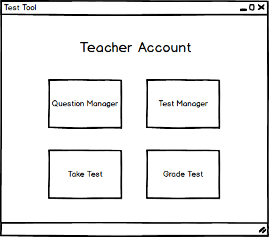
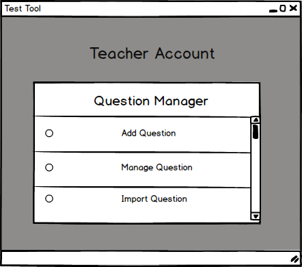
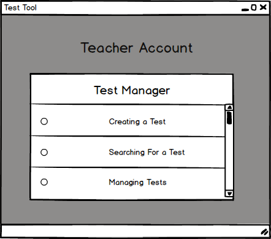

After the user logs in, the system redirects him/her to the appropriate window based on his/her credentials. In this case, the system shows a Teacher's Account as shown in Figure 1.

Figure 1: Teacher Account menus.
This menu is the main navigation screen that a teacher uses to create questions and tests, take tests, and view grades.
The user clicks on the "Question Manager" button, the system shows the screen on Figure 2.

Figure 2: Question Manager popup.
The user sees all different options for that module and picks an option by their choice. The user clicks on the "Test Manager" button, the system shows the screen on Figure 3.

Figure 3: Test Manager popup.
The user sees all different options for that module and picks an option by their choice.
The teacher is presented with all four options: Question Manager, Test Manager, Take Tests, and Grade Test;
After clicking on the third square, the "Take Tests", the user is redirected to the appropriate screen.
After clicking on the fourth square, the "Grade Test", the user is taken to a page that shows him/her all the tests that they have published and how many of them need to be graded.